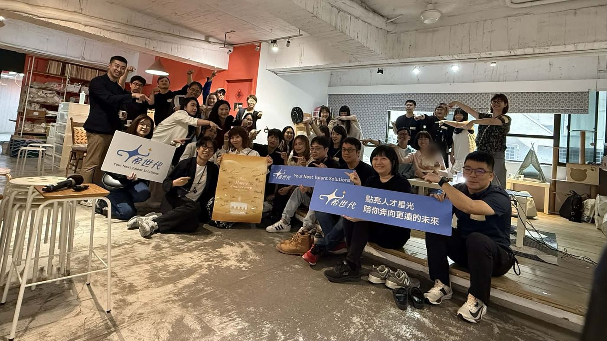

"Our call for action is to encourage, even require, HR professionals to transform themselves to do stakeholder HR by being an architect, facilitator, exemplar, and implementer of hybrid work—disaggregating tasks, bringing human and digital agents together, and thus delivering stakeholder value."
聚焦企業轉型及組織發展的人資實踐家
20+ 年橫跨外商、新創、上市櫃的人資實戰歷練，累積輔導 20+ 家企業於組織、人才與營運轉型。Michelle 深知組織在不同生命週期的真實困境，從診斷到落地，從框架到陪跑——希世代 XI Gen 是她將這 20 多年淬煉出的方法，系統化帶給每一個需要的組織。
Michelle 過去除了人資外，亦曾帶領商務、客服、總務及職安等不同職能。踏入創業的後職涯，「希世代」的理念在於提供創辦人、管理團隊及人資夥伴們關於組織迭代、企業發展等挑戰所需的引導與技能培訓；讓優秀品牌及企業主可以專注創新，共同打造更多元包容、允許試錯的職涯環境。
每條產品線都源自真實組織現場的淬煉，不是學術理論，而是明天就能用的框架與工具。
五個組織生命週期 × 15 組引導對話 × Dave Ulrich 四大 Pivot 整合。讓 CXO 在診斷現場真正「看見」組織的真實位置，帶著行動回去。
→ 了解 OIC 產品線從行政協調者到策略夥伴的完整路徑。XI Gen Strategic HRBP Playbook × PHRi® 七大知識域對照，讓 HRBP 真正成為商業問題的 HR 解方。
即將推出 · 預先登記 →整合國際知名管顧框架，從職涯目的出發到設計 90 天體驗旅程，幫助新任與資深主管建立系統化的領導力準備。
即將推出 · 預先登記 →20 / 30 / 40 世代各自精彩的教練引導工作坊。先理解人，再推動改變；先認識自己，再規劃職涯。小班互動，帶走一個屬於自己的行動承諾。
→ 了解 Career Coaching 工作坊"The 5 stage life cycle and the ideas in Age of HR look like they complement each other."
— Dave Ulrich · Professor, Ross School of Business · Author, The Age of HR · LinkedIn DM, 2026

想了解 OIC 如何在你的場域落地，或探索最適合你的產品路徑？
歡迎與 Michelle 直接聊聊你的組織現況。